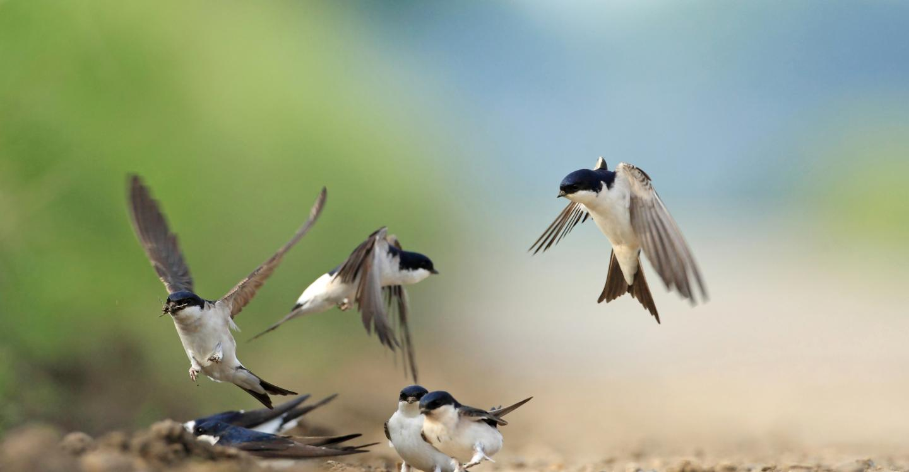
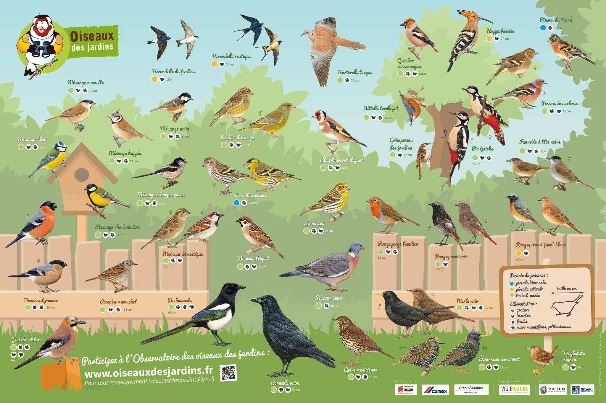

Briquodiversité
L’urbanisation détruit de plus en plus vite les espaces de vie des animaux et une partie de la biodiversité.
Notre solution :
- Briques intégrées aux façades
- Lieu de vie pour les oiseaux / rongeurs / insectes

L’urbanisation détruit de plus en plus vite les espaces de vie des animaux et une partie de la biodiversité.
Notre solution :

